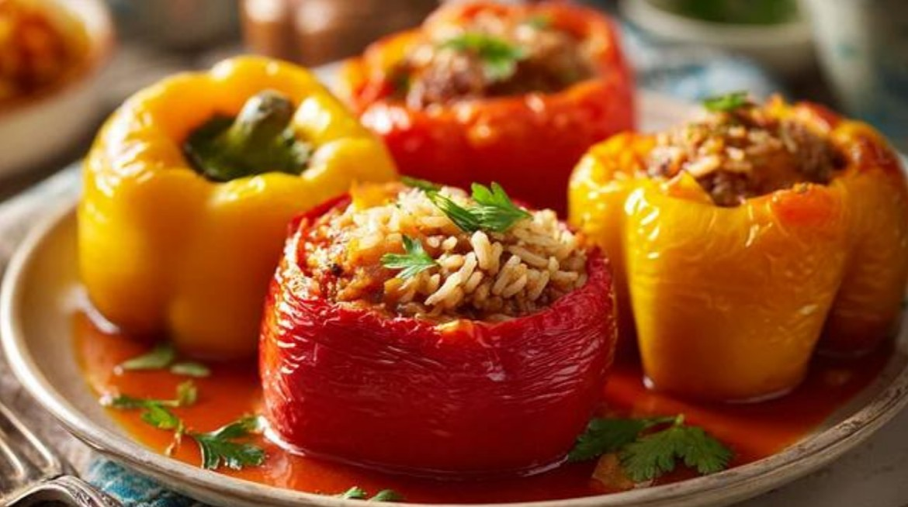

Dolma (Stuffed Bell Peppers With Ground Meat)
Dolma is a cherished dish across the Middle East, the Mediterranean, and the Balkans, but it holds a particularly strong place in Türkiye’s culinary tradition. The word “dolma” itself comes from Turkish, meaning “to fill,” and Türkiye is one of the regions where this dish is most deeply rooted and widely celebrated.
In this version, colorful bell peppers are hollowed out and filled with a savory mixture of ground meat, rice, onions, herbs, and spices. They’re then simmered in a rich tomato-based sauce until the peppers become tender and the filling is aromatic and flavorful. The natural sweetness of the peppers blends beautifully with the seasoned meat, making it both hearty and comforting.
Today, dolma remains a signature dish in Turkish home cooking, often served at family gatherings and festive meals, while also appearing in many nearby countries with their own local twists.
Ingredients
- 10 green bell peppers
- 200 g of ground beef / lamb
- 1/3 cup of olive oil
- 1.5 cups of rice
- 1 large onion
- 2-3 tomatoes
- 2 tablespoons of tomato paste
- 3-4 tbsps of olive oil
- 2 teaspoons of sweet paprika
- Salt
- Black pepper
- Dried mint
- Red pepper flakes
- Water
How to Make It
- Finely chop the onion and sauté in olive oil until translucent.
- Add the ground meat and cook until it turns brown.
- Add the tomato paste and stir for 1-2 mins.
- Add 1 finely chopped tomato and cook for 2-3 mins.
- Add the salt and paprika and stir.
- Add the rinsed rice and stir.
- Add 1.5 cups hot water, put the lid on and cook on medium heat until all the water is absorbed.
- Remove from heat, add black pepper, dried mint and red pepper flakes to taste then stir well.
- Remove the seeds of bell peppers and stuff them loosely with the meat filling until full.
- Put 1 slice of tomato on each pepper.
- Place the stuffed peppers in a pan on a single layer.
- Mix together 1 tablespoon of tomato paste, paprika, salt and 2-3 cups of water.
- Pour this mixture in between the stuffed peppers in the pan, without getting the water into the peppers.
- Put the lid on and cook on low heat until the peppers are softened.